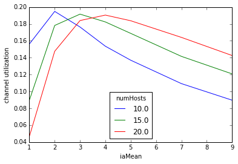
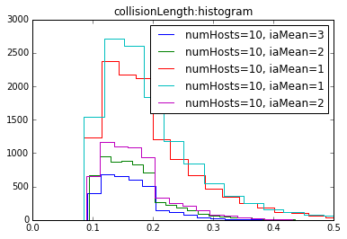

Result Analysis with Python
1. When to use Python?¶
The Analysis Tool in the OMNeT++ IDE is best suited for casual exploration of simulation results. If you are doing sophisticated result analysis, you will notice after a while that you have outgrown the IDE. The need for customized charts, the necessity of multi-step computations to produce chart input, or the sheer volume of raw simulation results might all be causes to make you look for something else.
If you are an R or Matlab expert, you'll probably reach for those tools, but for everyone else, Python with the right libraries is pretty much the best choice. Python has a big momentum for data science, and in addition to having excellent libraries for data analysis and visualization, it is also a great general-purpose programming language. Python is used for diverse problems ranging from building desktop GUIs to machine learning and AI, so the knowledge you gain by learning it will be convertible to other areas.
This tutorial will walk you through the initial steps of using Python for analysing simulation results, and shows how to do some of the most common tasks. The tutorial assumes that you have a working knowledge of OMNeT++ with regard to result recording, and basic familiarity with Python.
2. Setting up¶
Before we can start, you need to install the necessary software. First, make sure you have Python, either version 2.x or 3.x (they are slightly incompatible.) If you have both versions available on your system, we recommend version 3.x. You also need OMNeT++ version 5.2 or later.
We will heavily rely on three Python packages: NumPy, Pandas, and Matplotlib. There are also optional packages that will be useful for certain tasks: SciPy, PivotTable.js. We also recommend that you install IPython and Jupyter, because they let you work much more comfortably than the bare Python shell.
On most systems, these packages can be installed with pip, the Python package
manager (if you go for Python 3, replace pip with pip3 in the commands
below):
sudo pip install ipython jupyter sudo pip install numpy pandas matplotlib sudo pip install scipy pivottablejs
As packages continually evolve, there might be incompatibilities between
versions. We used the following versions when writing this tutorial:
Pandas 0.20.2, NumPy 1.12.1, SciPy 0.19.1, Matplotlib 1.5.1, PivotTable.js 0.8.0.
An easy way to determine which versions you have installed is using the pip list
command. (Note that the last one is the version of the Python interface library,
the PivotTable.js main Javascript library uses different version numbers, e.g.
2.7.0.)
3. Getting your simulation results into Python¶
OMNeT++ result files have their own file format which is not directly digestible by Python. There are a number of ways to get your data inside Python:
-
Export from the IDE. The Analysis Tool can export data in a number of formats, the ones that are useful here are CSV and Python-flavoured JSON. In this tutorial we'll use the CSV export, and read the result into Pandas using its
read_csv()function. -
Export using scavetool. Exporting from the IDE may become tedious after a while, because you have to go through the GUI every time your simulations are re-run. Luckily, you can automate the exporting with OMNeT++'s scavetool program. scavetool exposes the same export functionality as the IDE, and also allows filtering of the data.
-
Read the OMNeT++ result files directly from Python. Development of a Python package to read these files into Pandas data frames is underway, but given that these files are line-oriented text files with a straightforward and well-documented structure, writing your own custom reader is also a perfectly feasible option.
-
SQLite. Since version 5.1, OMNeT++ has the ability to record simulation results int SQLite3 database files, which can be opened directly from Python using the sqlite package. This lets you use SQL queries to select the input data for your charts or computations, which is kind of cool! You can even use GUIs like SQLiteBrowser to browse the database and craft your SELECT statements. Note: if you configure OMNeT++ for SQLite3 output, you'll still get
.vecand.scafiles as before, only their format will change from textual to SQLite's binary format. When querying the contents of the files, one issue to deal with is that SQLite does not allow cross-database queries, so you either need to configure OMNeT++ to record everything into one file (i.e. each run should append instead of creating a new file), or use scavetool's export functionality to merge the files into one. -
Custom result recording. There is also the option to instrument the simulation (via C++ code) or OMNeT++ (via custom result recorders) to produce files that Python can directly digest, e.g. CSV. However, in the light of the above options, it is rarely necessary to go this far.
With large-scale simulation studies, it can easily happen that the full set of simulation results do not fit into the memory at once. There are also multiple approaches to deal with this problem:
- If you don't need all simulation results for the analysis, you can configure OMNeT++ to record only a subset of them. Fine-grained control is available.
- Perform filtering and aggregation steps before analysis. The IDE and scavetool are both capable of filtering the results before export.
- When the above approaches are not enough, it can help to move part of the result processing (typically, filtering and aggregation) into the simulation model as dedicated result collection modules. However, this solution requires significantly more work than the previous two, so use with care.
In this tutorial, we'll work with the contents of the samples/resultfiles
directory distributed with OMNeT++. The directory contains result
files produced by the Aloha and Routing sample simulations, both
of which are parameter studies. We'll start by looking at the Aloha results.
As the first step, we use OMNeT++'s scavetool to convert Aloha's scalar files
to CSV. Run the following commands in the terminal (replace ~/omnetpp with
the location of your OMNeT++ installation):
cd ~/omnetpp/samples/resultfiles/aloha scavetool x *.sca -o aloha.csv
In the scavetool command line, x means export, and the export format is
inferred from the output file's extension. (Note that scavetool supports
two different CSV output formats. We need CSV Records, or CSV-R for short,
which is the default for the .csv extension.)
Let us spend a minute on what the export has created. The CSV file
has a fixed number of columns named run, type, module, name,
value, etc. Each result item, i.e. scalar, statistic, histogram
and vector, produces one row of output in the CSV. Other items such
as run attributes, iteration variables of the parameter study and result
attributes also generate their own rows. The content of the type column
determines what type of information a given row contains. The type
column also determines which other columns are in use. For example,
the binedges and binvalues columns are only filled in for histogram
items. The colums are:
- run: Identifies the simulation run
- type: Row type, one of the following:
scalar,vector,statistics,histogram,runattr,itervar,param,attr - module: Hierarchical name (a.k.a. full path) of the module that recorded the result item
- name: Name of the result item (scalar, statistic, histogram or vector)
- attrname: Name of the run attribute or result item attribute (in the latter
case, the
moduleandnamecolumns identify the result item the attribute belongs to) - attrvalue: Value of run and result item attributes, iteration variables,
saved ini param settings (
runattr,attr,itervar,param) - value: Output scalar value
- count, sumweights, mean, min, max, stddev: Fields of the statistics or histogram
- binedges, binvalues: Histogram bin edges and bin values, as space-separated lists. len(binedges)==len(binvalues)+1
- vectime, vecvalue: Output vector time and value arrays, as space-separated lists
When the export is done, you can start Jupyter server with the following command:
jupyter notebook
Open a web browser with the displayed URL to access the Jupyter GUI. Once there, choose New -> Python3 in the top right corner to open a blank notebook. The notebook allows you to enter Python commands or sequences of commands, run them, and view the output. Note that Enter simply inserts a newline; hit Ctrl+Enter to execute the commands in the current cell, or Alt+Enter to execute them and also insert a new cell below.
If you cannot use Jupyter for some reason, a terminal-based Python shell
(python or ipython) will also allow you to follow the tutorial.
On the Python prompt, enter the following lines to make the functionality of
Pandas, NumpPy and Matplotlib available in the session. The last, %matplotlib
line is only needed for Jupyter. (It is a "magic command" that arranges plots
to be displayed within the notebook.)
import pandas as pd import numpy as np import matplotlib.pyplot as plt %matplotlib inline
We utilize the read_csv() function to import the contents of the
CSV file into a data frame. The data frame is the central concept of
Pandas. We will continue to work with this data frame throughout
the whole tutorial.
aloha = pd.read_csv('aloha.csv')
4. Exploring the data frame¶
You can view the contents of the data frame by simply entering the name
of the variable (aloha). Alternatively, you can use the head() method
of the data frame to view just the first few lines.
aloha.head()
| run | type | module | name | attrname | attrvalue | value | count | sumweights | mean | stddev | min | max | binedges | binvalues | vectime | vecvalue | |
|---|---|---|---|---|---|---|---|---|---|---|---|---|---|---|---|---|---|
| 0 | PureAlohaExperiment-4-20170627-20:42:20-22739 | runattr | NaN | NaN | configname | PureAlohaExperiment | NaN | NaN | NaN | NaN | NaN | NaN | NaN | NaN | NaN | NaN | NaN |
| 1 | PureAlohaExperiment-4-20170627-20:42:20-22739 | runattr | NaN | NaN | datetime | 20170627-20:42:20 | NaN | NaN | NaN | NaN | NaN | NaN | NaN | NaN | NaN | NaN | NaN |
| 2 | PureAlohaExperiment-4-20170627-20:42:20-22739 | runattr | NaN | NaN | experiment | PureAlohaExperiment | NaN | NaN | NaN | NaN | NaN | NaN | NaN | NaN | NaN | NaN | NaN |
| 3 | PureAlohaExperiment-4-20170627-20:42:20-22739 | runattr | NaN | NaN | inifile | omnetpp.ini | NaN | NaN | NaN | NaN | NaN | NaN | NaN | NaN | NaN | NaN | NaN |
| 4 | PureAlohaExperiment-4-20170627-20:42:20-22739 | runattr | NaN | NaN | iterationvars | numHosts=10, iaMean=3 | NaN | NaN | NaN | NaN | NaN | NaN | NaN | NaN | NaN | NaN | NaN |
You can see that the structure of the data frame, i.e. rows and columns, directly corresponds to the contents of the CSV file. Column names have been taken from the first line of the CSV file. Missing values are represented with NaNs (not-a-number).
The complementary tail() method shows the last few lines. There is also
an iloc method that we use at places in this tutorial to show rows
from the middle of the data frame. It accepts a range: aloha.iloc[20:30]
selects 10 lines from line 20, aloha.iloc[:5] is like head(), and
aloha.iloc[-5:] is like tail().
aloha.iloc[1200:1205]
| run | type | module | name | attrname | attrvalue | value | count | sumweights | mean | stddev | min | max | binedges | binvalues | vectime | vecvalue | |
|---|---|---|---|---|---|---|---|---|---|---|---|---|---|---|---|---|---|
| 1200 | PureAlohaExperiment-1-20170627-20:42:17-22739 | scalar | Aloha.server | collidedFrames:last | NaN | NaN | 40692.000000 | NaN | NaN | NaN | NaN | NaN | NaN | NaN | NaN | NaN | NaN |
| 1201 | PureAlohaExperiment-1-20170627-20:42:17-22739 | attr | Aloha.server | collidedFrames:last | source | sum(collision) | NaN | NaN | NaN | NaN | NaN | NaN | NaN | NaN | NaN | NaN | NaN |
| 1202 | PureAlohaExperiment-1-20170627-20:42:17-22739 | attr | Aloha.server | collidedFrames:last | title | collided frames, last | NaN | NaN | NaN | NaN | NaN | NaN | NaN | NaN | NaN | NaN | NaN |
| 1203 | PureAlohaExperiment-1-20170627-20:42:17-22739 | scalar | Aloha.server | channelUtilization:last | NaN | NaN | 0.156176 | NaN | NaN | NaN | NaN | NaN | NaN | NaN | NaN | NaN | NaN |
| 1204 | PureAlohaExperiment-1-20170627-20:42:17-22739 | attr | Aloha.server | channelUtilization:last | interpolationmode | linear | NaN | NaN | NaN | NaN | NaN | NaN | NaN | NaN | NaN | NaN | NaN |
Hint: If you are in the terminal and you find that the data frame printout does not make use of the whole width of the terminal, you can increase the display width for better readability with the following commands:
pd.set_option('display.width', 180)
pd.set_option('display.max_colwidth', 100)
If you have not looked at any Pandas tutorial yet, now is a very good time to read one. (See References at the bottom of this page for hints.) Until you finish, here are some basics for your short-term survival.
You can refer to a column as a whole with the array index syntax: aloha['run'].
Alternatively, the more convenient member access syntax (aloha.run) can
also be used, with restrictions. (E.g. the column name must be valid as a Python
identifier, and should not collide with existing methods of the data frame.
Names that are known to cause trouble include name, min, max, mean).
aloha.run.head() # .head() is for limiting the output to 5 lines here
0 PureAlohaExperiment-4-20170627-20:42:20-22739 1 PureAlohaExperiment-4-20170627-20:42:20-22739 2 PureAlohaExperiment-4-20170627-20:42:20-22739 3 PureAlohaExperiment-4-20170627-20:42:20-22739 4 PureAlohaExperiment-4-20170627-20:42:20-22739 Name: run, dtype: object
Selecting multiple columns is also possible, one just needs to use a list of column names as index. The result will be another data frame. (The double brackets in the command are due to the fact that both the array indexing and the list syntax use square brackets.)
tmp = aloha[['run', 'attrname', 'attrvalue']] tmp.head()
| run | attrname | attrvalue | |
|---|---|---|---|
| 0 | PureAlohaExperiment-4-20170627-20:42:20-22739 | configname | PureAlohaExperiment |
| 1 | PureAlohaExperiment-4-20170627-20:42:20-22739 | datetime | 20170627-20:42:20 |
| 2 | PureAlohaExperiment-4-20170627-20:42:20-22739 | experiment | PureAlohaExperiment |
| 3 | PureAlohaExperiment-4-20170627-20:42:20-22739 | inifile | omnetpp.ini |
| 4 | PureAlohaExperiment-4-20170627-20:42:20-22739 | iterationvars | numHosts=10, iaMean=3 |
The describe() method can be used to get an idea about the contents of a
column. When applied to a non-numeric column, it prints the number of
non-null elements in it (count), the number of unique values (unique),
the most frequently occurring value (top) and its multiplicity (freq),
and the inferred data type (more about that later.)
aloha.module.describe()
count 1012 unique 11 top Aloha.server freq 932 Name: module, dtype: object
You can get a list of the unique values using the unique() method. For example,
the following command lists the names of modules that have recorded any statistics:
aloha.module.unique()
array([nan, 'Aloha.server', 'Aloha.host[0]', 'Aloha.host[1]',
'Aloha.host[2]', 'Aloha.host[3]', 'Aloha.host[4]', 'Aloha.host[5]',
'Aloha.host[6]', 'Aloha.host[7]', 'Aloha.host[8]', 'Aloha.host[9]'], dtype=object)
When you apply describe() to a numeric column, you get a statistical summary
with things like mean, standard deviation, minimum, maximum, and various
quantiles.
aloha.value.describe()
count 294.000000 mean 4900.038749 std 11284.077075 min 0.045582 25% 0.192537 50% 668.925298 75% 5400.000000 max 95630.000000 Name: value, dtype: float64
Applying describe() to the whole data frame creates a similar report about
all numeric columns.
aloha.describe()
| value | count | sumweights | mean | stddev | min | max | |
|---|---|---|---|---|---|---|---|
| count | 294.000000 | 84.000000 | 0.0 | 84.000000 | 84.000000 | 84.000000 | 84.000000 |
| mean | 4900.038749 | 5591.380952 | NaN | 1.489369 | 0.599396 | 1.049606 | 6.560987 |
| std | 11284.077075 | 4528.796760 | NaN | 1.530455 | 0.962515 | 0.956102 | 9.774404 |
| min | 0.045582 | 470.000000 | NaN | 0.152142 | 0.031326 | 0.099167 | 0.272013 |
| 25% | 0.192537 | 1803.000000 | NaN | 0.164796 | 0.049552 | 0.099186 | 0.498441 |
| 50% | 668.925298 | 4065.500000 | NaN | 1.197140 | 0.243035 | 1.049776 | 3.084077 |
| 75% | 5400.000000 | 8815.000000 | NaN | 2.384397 | 0.741081 | 2.000000 | 9.000000 |
| max | 95630.000000 | 14769.000000 | NaN | 6.936747 | 5.323887 | 2.000000 | 54.000000 |
Let's spend a minute on data types and column data types. Every column has a
data type (abbreviated dtype) that determines what type of values it may
contain. Column dtypes can be printed with dtypes:
aloha.dtypes
run object type object module object name object attrname object attrvalue object value float64 count float64 sumweights float64 mean float64 stddev float64 min float64 max float64 binedges object binvalues object vectime object vecvalue object dtype: object
The two most commonly used dtypes are float64 and object. A float64 column
contains floating-point numbers, and missing values are represented with NaNs.
An object column may contain basically anything -- usually strings, but we'll
also have NumPy arrays (np.ndarray) as elements in this tutorial.
Numeric values and booleans may also occur in an object column. Missing values
in an object column are usually represented with None, but Pandas also
interprets the floating-point NaN like that.
Some degree of confusion arises from fact that some Pandas functions check
the column's dtype, while others are already happy if the contained elements
are of the required type. To clarify: applying describe() to a column
prints a type inferred from the individual elements, not the column dtype.
The column dtype type can be changed with the astype() method; we'll see an
example for using it later in this tutorial.
The column dtype can be accessed as the dtype property of a column, for example
aloha.stddev.dtype yields dtype('float64'). There are also convenience
functions such as is_numeric_dtype() and is_string_dtype() for checking
column dtype. (They need to be imported from the pandas.api.types package
though.)
Another vital thing to know, especially due of the existence of the type
column in the OMNeT++ CSV format, is how to filter rows. Perhaps surprisingly,
the array index syntax can be used here as well. For example, the following expression
selects the rows that contain iteration variables: aloha[aloha.type == 'itervar'].
With a healthy degree of sloppiness, here's how it works: aloha.type yields
the values in the type column as an array-like data structure;
aloha.type=='itervar' performs element-wise comparison and produces an array
of booleans containing True where the condition holds and False where not;
and indexing a data frame with an array of booleans returns the rows that
correspond to True values in the array.
Conditions can be combined with AND/OR using the "&" and "|" operators, but
you need parentheses because of operator precedence. The following command
selects the rows that contain scalars with a certain name and owner module:
tmp = aloha[(aloha.type=='scalar') & (aloha.module=='Aloha.server') & (aloha.name=='channelUtilization:last')] tmp.head()
| run | type | module | name | attrname | attrvalue | value | count | sumweights | mean | stddev | min | max | binedges | binvalues | vectime | vecvalue | |
|---|---|---|---|---|---|---|---|---|---|---|---|---|---|---|---|---|---|
| 1186 | PureAlohaExperiment-0-20170627-20:42:16-22739 | scalar | Aloha.server | channelUtilization:last | NaN | NaN | 0.156057 | NaN | NaN | NaN | NaN | NaN | NaN | NaN | NaN | NaN | NaN |
| 1203 | PureAlohaExperiment-1-20170627-20:42:17-22739 | scalar | Aloha.server | channelUtilization:last | NaN | NaN | 0.156176 | NaN | NaN | NaN | NaN | NaN | NaN | NaN | NaN | NaN | NaN |
| 1220 | PureAlohaExperiment-2-20170627-20:42:19-22739 | scalar | Aloha.server | channelUtilization:last | NaN | NaN | 0.196381 | NaN | NaN | NaN | NaN | NaN | NaN | NaN | NaN | NaN | NaN |
| 1237 | PureAlohaExperiment-3-20170627-20:42:20-22739 | scalar | Aloha.server | channelUtilization:last | NaN | NaN | 0.193253 | NaN | NaN | NaN | NaN | NaN | NaN | NaN | NaN | NaN | NaN |
| 1254 | PureAlohaExperiment-4-20170627-20:42:20-22739 | scalar | Aloha.server | channelUtilization:last | NaN | NaN | 0.176507 | NaN | NaN | NaN | NaN | NaN | NaN | NaN | NaN | NaN | NaN |
You'll also need to know how to add a new column to the data frame. Now that is a bit controversial topic, because at the time of writing, there is a "convenient" syntax and an "official" syntax for it. The "convenient" syntax is a simple assignment, for example:
aloha['qname'] = aloha.module + "." + aloha.name aloha[aloha.type=='scalar'].head() # print excerpt
| run | type | module | name | attrname | attrvalue | value | count | sumweights | mean | stddev | min | max | binedges | binvalues | vectime | vecvalue | qname | |
|---|---|---|---|---|---|---|---|---|---|---|---|---|---|---|---|---|---|---|
| 1176 | PureAlohaExperiment-0-20170627-20:42:16-22739 | scalar | Aloha.server | duration | NaN | NaN | 5400.000000 | NaN | NaN | NaN | NaN | NaN | NaN | NaN | NaN | NaN | NaN | Aloha.server.duration |
| 1177 | PureAlohaExperiment-0-20170627-20:42:16-22739 | scalar | Aloha.server | collisionLength:mean | NaN | NaN | 0.198275 | NaN | NaN | NaN | NaN | NaN | NaN | NaN | NaN | NaN | NaN | Aloha.server.collisionLength:mean |
| 1179 | PureAlohaExperiment-0-20170627-20:42:16-22739 | scalar | Aloha.server | collisionLength:sum | NaN | NaN | 2457.026781 | NaN | NaN | NaN | NaN | NaN | NaN | NaN | NaN | NaN | NaN | Aloha.server.collisionLength:sum |
| 1181 | PureAlohaExperiment-0-20170627-20:42:16-22739 | scalar | Aloha.server | collisionLength:max | NaN | NaN | 0.901897 | NaN | NaN | NaN | NaN | NaN | NaN | NaN | NaN | NaN | NaN | Aloha.server.collisionLength:max |
| 1183 | PureAlohaExperiment-0-20170627-20:42:16-22739 | scalar | Aloha.server | collidedFrames:last | NaN | NaN | 40805.000000 | NaN | NaN | NaN | NaN | NaN | NaN | NaN | NaN | NaN | NaN | Aloha.server.collidedFrames:last |
It looks nice and natural, but it is not entirely correct. It often results in
a warning: SettingWithCopyWarning: A value is trying to be set on a copy of a
slice from a DataFrame.... The message essentially says that the operation
(here, adding the new column) might have been applied to a temporary object
instead of the original data frame, and thus might have been ineffective.
Luckily, that is not the case most of the time (the operation does take
effect). Nevertheless, for production code, i.e. scripts, the "official"
solution, the assign() method of the data frame is recommended, like this:
aloha = aloha.assign(qname = aloha.module + "." + aloha.name) aloha[aloha.type=='scalar'].head()
| run | type | module | name | attrname | attrvalue | value | count | sumweights | mean | stddev | min | max | binedges | binvalues | vectime | vecvalue | qname | |
|---|---|---|---|---|---|---|---|---|---|---|---|---|---|---|---|---|---|---|
| 1176 | PureAlohaExperiment-0-20170627-20:42:16-22739 | scalar | Aloha.server | duration | NaN | NaN | 5400.000000 | NaN | NaN | NaN | NaN | NaN | NaN | NaN | NaN | NaN | NaN | Aloha.server.duration |
| 1177 | PureAlohaExperiment-0-20170627-20:42:16-22739 | scalar | Aloha.server | collisionLength:mean | NaN | NaN | 0.198275 | NaN | NaN | NaN | NaN | NaN | NaN | NaN | NaN | NaN | NaN | Aloha.server.collisionLength:mean |
| 1179 | PureAlohaExperiment-0-20170627-20:42:16-22739 | scalar | Aloha.server | collisionLength:sum | NaN | NaN | 2457.026781 | NaN | NaN | NaN | NaN | NaN | NaN | NaN | NaN | NaN | NaN | Aloha.server.collisionLength:sum |
| 1181 | PureAlohaExperiment-0-20170627-20:42:16-22739 | scalar | Aloha.server | collisionLength:max | NaN | NaN | 0.901897 | NaN | NaN | NaN | NaN | NaN | NaN | NaN | NaN | NaN | NaN | Aloha.server.collisionLength:max |
| 1183 | PureAlohaExperiment-0-20170627-20:42:16-22739 | scalar | Aloha.server | collidedFrames:last | NaN | NaN | 40805.000000 | NaN | NaN | NaN | NaN | NaN | NaN | NaN | NaN | NaN | NaN | Aloha.server.collidedFrames:last |
For completeness, one can remove a column from a data frame using either the
del operator or the drop() method of the data frame. Here we show the former
(also to remove the column we added above, as we won't need it for now):
del aloha['qname']
5. Revisiting CSV loading¶
The way we have read the CSV file has one small deficiency: all data in the
attrvalue column are represented as strings, event though many of them
are really numbers, for example the values of the iaMean and numHosts
iteration variables. You can verify that by printing the unique values (
aloha.attrvalue.unique() -- it will print all values with quotes), or using
the type() operator on an element:
type( aloha[aloha.type=='scalar'].iloc[0].value )
numpy.float64
The reason is that read_csv() infers data types of columns from the data
it finds in them. Since the attrvalue column is shared by run attributes,
result item attributes, iteration variables and some other types of rows,
there are many non-numeric strings in it, and read_csv() decides that it is
a string column.
A similar issue arises with the binedges, binvalues, vectime, vecvalue
columns. These columns contain lists of numbers separated by spaces, so they
are read into strings as well. However, we would like to store them as NumPy
arrays (ndarray) inside the data frame, because that's the form we can use
in plots or as computation input.
Luckily, read_csv() allows us to specify conversion functions for each column.
So, armed with the following two short functions:
def parse_if_number(s):
try: return float(s)
except: return True if s=="true" else False if s=="false" else s if s else None
def parse_ndarray(s):
return np.fromstring(s, sep=' ') if s else None
we can read the CSV file again, this time with the correct conversions:
aloha = pd.read_csv('aloha.csv', converters = {
'attrvalue': parse_if_number,
'binedges': parse_ndarray,
'binvalues': parse_ndarray,
'vectime': parse_ndarray,
'vecvalue': parse_ndarray})
You can verify the result e.g. by printing the unique values again.
6. Load-time filtering¶
If the CSV file is large, you may want to skip certain columns or rows when reading it into memory. (File size is about the only valid reason for using load-time filtering, because you can also filter out or drop rows/columns from the data frame when it is already loaded.)
To filter out columns, you need to specify in the usecols parameter
the list of columns to keep:
tmp = pd.read_csv('aloha.csv', usecols=['run', 'type', 'module', 'name', 'value'])
There is no such direct support for filtering out rows based on their content, but we can implement it using the iterator API that reads the CSV file in chunks. We can filter each chunk before storing and finally concatenating them into a single data frame:
iter = pd.read_csv('aloha.csv', iterator=True, chunksize=100)
chunks = [ chunk[chunk['type']!='histogram'] for chunk in iter ] # discards type=='histogram' lines
tmp = pd.concat(chunks)
7. Plotting scalars¶
Scalars can serve as input for many different kinds of plots. Here we'll show
how one can create a "throughput versus offered load" type plot. We will plot
the channel utilization in the Aloha model in the function of the packet
generation frequency. Channel utilization is also affected by the number of
hosts in the network -- we want results belonging to the same number of hosts
to form iso lines. Packet generation frequency and the number of hosts are
present in the results as iteration variables named iaMean and numHosts;
channel utilization values are the channelUtilization:last scalars saved
by the Aloha.server module. The data contains the results from two simulation
runs for each (iaMean, numHosts) pair done with different seeds; we want
to average them for the plot.
The first few steps are fairly straightforward. We only need the scalars and the
iteration variables from the data frame, so we filter out the rest. Then we
create a qname column from other columns to hold the names of our variables:
the names of scalars are in the module and name columns (we want to join them
with a dot), and the names of iteration variables are in the attrname column.
Since attrname is not filled in for scalar rows, we can take attrname asqname
first, then fill in the holes with module.name. We use the combine_first()
method for that: a.combine_first(b) fills the holes in a using the
corresponding values from b.
The similar issue arises with values: values of output scalars are in the value
column, while that of iteration variables are in the attrvalue column.
Since attrvalue is unfilled for scalar rows, we can again utilize
combine_first() to merge two. There is one more catch: we need to change
the dtype of the attrvalue to float64, otherwise the resulting value
column also becomes object dtype. (Luckily, all our iteration variables are
numeric, so the dtype conversion is possible. In other simulations that contain
non-numeric itervars, one needs to filter those out, force them into numeric
values somehow, or find some other trick to make things work.)
scalars = aloha[(aloha.type=='scalar') | (aloha.type=='itervar')] # filter rows
scalars = scalars.assign(qname = scalars.attrname.combine_first(scalars.module + '.' + scalars.name)) # add qname column
scalars.value = scalars.value.combine_first(scalars.attrvalue.astype('float64')) # merge value columns
scalars[['run', 'type', 'qname', 'value', 'module', 'name', 'attrname']].iloc[80:90] # print an excerpt of the result
| run | type | qname | value | module | name | attrname | |
|---|---|---|---|---|---|---|---|
| 1134 | PureAlohaExperiment-40-20170627-20:42:22-22773 | itervar | iaMean | 9.000000 | NaN | NaN | iaMean |
| 1135 | PureAlohaExperiment-40-20170627-20:42:22-22773 | itervar | numHosts | 20.000000 | NaN | NaN | numHosts |
| 1162 | PureAlohaExperiment-41-20170627-20:42:22-22773 | itervar | iaMean | 9.000000 | NaN | NaN | iaMean |
| 1163 | PureAlohaExperiment-41-20170627-20:42:22-22773 | itervar | numHosts | 20.000000 | NaN | NaN | numHosts |
| 1176 | PureAlohaExperiment-0-20170627-20:42:16-22739 | scalar | Aloha.server.duration | 5400.000000 | Aloha.server | duration | NaN |
| 1177 | PureAlohaExperiment-0-20170627-20:42:16-22739 | scalar | Aloha.server.collisionLength:mean | 0.198275 | Aloha.server | collisionLength:mean | NaN |
| 1179 | PureAlohaExperiment-0-20170627-20:42:16-22739 | scalar | Aloha.server.collisionLength:sum | 2457.026781 | Aloha.server | collisionLength:sum | NaN |
| 1181 | PureAlohaExperiment-0-20170627-20:42:16-22739 | scalar | Aloha.server.collisionLength:max | 0.901897 | Aloha.server | collisionLength:max | NaN |
| 1183 | PureAlohaExperiment-0-20170627-20:42:16-22739 | scalar | Aloha.server.collidedFrames:last | 40805.000000 | Aloha.server | collidedFrames:last | NaN |
| 1186 | PureAlohaExperiment-0-20170627-20:42:16-22739 | scalar | Aloha.server.channelUtilization:last | 0.156057 | Aloha.server | channelUtilization:last | NaN |
To work further, it would be very convenient if we had a format where each
simulation run corresponds to one row, and all variables produced by that
run had their own columns. We can call it the wide format, and it can be
produced using the pivot() method:
scalars_wide = scalars.pivot('run', columns='qname', values='value')
scalars_wide.head()
| qname | Aloha.server.channelUtilization:last | Aloha.server.collidedFrames:last | Aloha.server.collisionLength:max | Aloha.server.collisionLength:mean | Aloha.server.collisionLength:sum | Aloha.server.duration | Aloha.server.receivedFrames:last | iaMean | numHosts |
|---|---|---|---|---|---|---|---|---|---|
| run | |||||||||
| PureAlohaExperiment-0-20170627-20:42:16-22739 | 0.156057 | 40805.0 | 0.901897 | 0.198275 | 2457.026781 | 5400.0 | 8496.0 | 1.0 | 10.0 |
| PureAlohaExperiment-1-20170627-20:42:17-22739 | 0.156176 | 40692.0 | 0.958902 | 0.198088 | 2456.494983 | 5400.0 | 8503.0 | 1.0 | 10.0 |
| PureAlohaExperiment-10-20170627-20:42:16-22741 | 0.109571 | 1760.0 | 0.326138 | 0.155154 | 126.450220 | 5400.0 | 5965.0 | 7.0 | 10.0 |
| PureAlohaExperiment-11-20170627-20:42:16-22741 | 0.108992 | 1718.0 | 0.340096 | 0.154529 | 125.477252 | 5400.0 | 5934.0 | 7.0 | 10.0 |
| PureAlohaExperiment-12-20170627-20:42:16-22741 | 0.090485 | 1069.0 | 0.272013 | 0.152142 | 78.201174 | 5400.0 | 4926.0 | 9.0 | 10.0 |
We are interested in only three columns for our plot:
scalars_wide[['numHosts', 'iaMean', 'Aloha.server.channelUtilization:last']].head()
| qname | numHosts | iaMean | Aloha.server.channelUtilization:last |
|---|---|---|---|
| run | |||
| PureAlohaExperiment-0-20170627-20:42:16-22739 | 10.0 | 1.0 | 0.156057 |
| PureAlohaExperiment-1-20170627-20:42:17-22739 | 10.0 | 1.0 | 0.156176 |
| PureAlohaExperiment-10-20170627-20:42:16-22741 | 10.0 | 7.0 | 0.109571 |
| PureAlohaExperiment-11-20170627-20:42:16-22741 | 10.0 | 7.0 | 0.108992 |
| PureAlohaExperiment-12-20170627-20:42:16-22741 | 10.0 | 9.0 | 0.090485 |
Since we have our x and y data in separate columns now, we can utilize the scatter plot feature of the data frame for plotting it:
scalars_wide.plot.scatter('iaMean', 'Aloha.server.channelUtilization:last')
plt.show()

NOTE: Although plt.show() is not needed in Jupyter (%matplotlib inline
turns on immediate display), we'll continue to include it in further code
fragments, so that they work without change when you use another Python shell.
The resulting chart looks quite good as the first attempt. However, it has some shortcomings:
- Dots are not connected. The dots that have the same
numHostsvalue should be connected with iso lines. - As the result of having two simulation runs for each (iaMean,numHosts) pair, the dots appear in pairs. We'd like to see their averages instead.
Unfortunately, scatter plot can only take us this far, we need to look for another way.
What we really need as chart input is a table where rows correspond to different
iaMean values, columns correspond to different numHosts values, and cells
contain channel utilization values (the average of the repetitions).
Such table can be produced from the "wide format" with another pivoting
operation. We use pivot_table(), a cousin of the pivot() method we've seen above.
The difference between them is that pivot() is a reshaping operation (it just
rearranges elements), while pivot_table() is more of a spreadsheet-style
pivot table creation operation, and primarily intended for numerical data.
pivot_table() accepts an aggregation function with the default being mean,
which is quite convenient for us now (we want to average channel utilization
over repetitions.)
aloha_pivot = scalars_wide.pivot_table(index='iaMean', columns='numHosts', values='Aloha.server.channelUtilization:last') # note: aggregation function = mean (that's the default) aloha_pivot.head()
| numHosts | 10.0 | 15.0 | 20.0 |
|---|---|---|---|
| iaMean | |||
| 1.0 | 0.156116 | 0.089539 | 0.046586 |
| 2.0 | 0.194817 | 0.178159 | 0.147564 |
| 3.0 | 0.176321 | 0.191571 | 0.183976 |
| 4.0 | 0.153569 | 0.182324 | 0.190452 |
| 5.0 | 0.136997 | 0.168780 | 0.183742 |
Note that rows correspond to various iaMean values (iaMean serves as index);
there is one column for each value of numHosts; and that data in the table
are the averages of the channel utilizations produced by the simulations
performed with the respective iaMean and numHosts values.
For the plot, every column should generate a separate line (with the x values
coming from the index column, iaMean) labelled with the column name.
The basic Matplotlib interface cannot create such plot in one step. However,
the Pandas data frame itself has a plotting interface which knows how to
interpret the data, and produces the correct plot without much convincing:
aloha_pivot.plot.line()
plt.ylabel('channel utilization')
plt.show()

8. Interactive pivot tables¶
Getting the pivot table right is not always easy, so having a GUI where one can drag columns around and immediately see the result is definitely a blessing. Pivottable.js presents such a GUI inside a browser, and although the bulk of the code is Javascript, it has a Python frond-end that integrates nicely with Jupyter. Let's try it!
import pivottablejs as pj pj.pivot_ui(scalars_wide)
<iframe width="100%" height="500" src="pivottablejs.html" frameborder="0" allowfullscreen ></iframe>
An interactive panel containing the pivot table will appear. Here is how you can reproduce the above "Channel utilization vs iaMean" plot in it:
- Drag
numHoststo the "rows" area of the pivot table. The table itself is the area on the left that initially only displays "Totals | 42", and the "rows" area is the empty rectangle directly of left it. The table should show have two columns (numHosts and Totals) and five rows in total after dragging. - Drag
iaMeanto the "columns" area (above the table). Columns for each value ofiaMeanshould appear in the table. - Near the top-left corner of the table, select Average from the combo box
that originally displays Count, and select
ChannelUtilization:lastfrom the combo box that appears below it. - In the top-left corner of the panel, select Line Chart from the combo box that originally displays Table.
If you can't get to see it, the following command will programmatically configure the pivot table in the appropriate way:
pj.pivot_ui(scalars_wide, rows=['numHosts'], cols=['iaMean'], vals=['Aloha.server.channelUtilization:last'], aggregatorName='Average', rendererName='Line Chart')
<iframe width="100%" height="500" src="pivottablejs.html" frameborder="0" allowfullscreen ></iframe>
If you want experiment with Excel's or LibreOffice's built-in pivot table
functionality, the data frame's to_clipboard() and to_csv() methods
will help you transfer the data. For example, you can issue the
scalars_wide.to_clipboard() command to put the data on the clipboard, then
paste it into the spreadsheet. Alternatively, type print(scalars_wide.to_csv())
to print the data in CSV format that you can select and then copy/paste.
Or, use scalars_wide.to_csv("scalars.csv") to save the data into a file
which you can import.
9. Plotting histograms¶
In this section we explore how to plot histograms recorded by the simulation.
Histograms are in rows that have "histogram" in the type column.
Histogram bin edges and bin values (counts) are in the binedges and
binvalues columns as NumPy array objects (ndarray).
Let us begin by selecting the histograms into a new data frame for convenience.
histograms = aloha[aloha.type=='histogram'] len(histograms)
84
We have 84 histograms. It makes no sense to plot so many histograms on one chart, so let's just take one on them, and examine its content.
hist = histograms.iloc[0] # the first histogram hist.binedges, hist.binvalues
(array([-0.11602833, -0.08732314, -0.05861794, -0.02991275, -0.00120756,
0.02749763, 0.05620283, 0.08490802, 0.11361321, 0.1423184 ,
0.1710236 , 0.19972879, 0.22843398, 0.25713917, 0.28584437,
0.31454956, 0.34325475, 0.37195994, 0.40066514, 0.42937033,
0.45807552, 0.48678071, 0.51548591, 0.5441911 , 0.57289629,
0.60160148, 0.63030668, 0.65901187, 0.68771706, 0.71642225,
0.74512745]),
array([ 0., 0., 0., 0., 0., 0., 0., 1234.,
2372., 2180., 2115., 1212., 917., 663., 473., 353.,
251., 186., 123., 99., 60., 44., 31., 25.,
15., 13., 9., 3., 5., 3.]))
The easiest way to plot the histogram from these two arrays is to look at it
as a step function, and create a line plot with the appropriate drawing style.
The only caveat is that we need to add an extra 0 element to draw the right
side of the last histogram bin.
plt.plot(hist.binedges, np.append(hist.binvalues, 0), drawstyle='steps-post') # or maybe steps-mid, for integers plt.show()

Another way to plot a recorded histogram is Matplotlib's hist() method,
although that is a bit tricky. Instead of taking histogram data, hist()
insists on computing the histogram itself from an array of values -- but we only
have the histogram, and not the data it was originally computed from.
Fortunately, hist() can accept a bin edges array, and another array as weights
for the values. Thus, we can trick it into doing what we want by passing
in our binedges array twice, once as bin edges and once as values, and
specifying binvalues as weights.
plt.hist(bins=hist.binedges, x=hist.binedges[:-1], weights=hist.binvalues) plt.show()

hist() has some interesting options. For example, we can change the plotting
style to be similar to a line plot by setting histtype='step'. To plot the
normalized version of the histogram, specify normed=True or density=True
(they work differently; see the Matplotlib documentation for details).
To draw the cumulative density function, also specify cumulative=True.
The following plot shows the effect of some of these options.
plt.hist(bins=hist.binedges, x=hist.binedges[:-1], weights=hist.binvalues, histtype='step', normed=True) plt.show()

To plot several histograms, we can iterate over the histograms and draw them one by one on the same plot. The following code does that, and also adds a legend and adjusts the bounds of the x axis.
somehistograms = histograms[histograms.name == 'collisionLength:histogram'][:5]
for row in somehistograms.itertuples():
plt.plot(row.binedges, np.append(row.binvalues, 0), drawstyle='steps-post')
plt.legend(somehistograms.module + "." + somehistograms.name)
plt.xlim(0, 0.5)
plt.show()

Note, however, that the legend contains the same string for all histograms,
which is not very meaningful. We could improve that by including some
characteristics of the simulation that generated them, i.e. the number of hosts
(numHosts iteration variable) and frame interarrival times (iaTime iteration
variable). We'll see in the next section how that can be achieved.
10. Adding iteration variables as columns¶
In this step, we add the iteration variables associated with the simulation run to the data frame as columns. There are several reasons why this is a good idea: they are very useful for generating the legends for plots of e.g. histograms and vectors (e.g. "collision multiplicity histogram for numHosts=20 and iaMean=2s"), and often needed as chart input as well.
First, we select the iteration variables vars as a smaller data frame.
itervars_df = aloha.loc[aloha.type=='itervar', ['run', 'attrname', 'attrvalue']] itervars_df.head()
| run | attrname | attrvalue | |
|---|---|---|---|
| 14 | PureAlohaExperiment-4-20170627-20:42:20-22739 | iaMean | 3 |
| 15 | PureAlohaExperiment-4-20170627-20:42:20-22739 | numHosts | 10 |
| 42 | PureAlohaExperiment-3-20170627-20:42:20-22739 | iaMean | 2 |
| 43 | PureAlohaExperiment-3-20170627-20:42:20-22739 | numHosts | 10 |
| 70 | PureAlohaExperiment-0-20170627-20:42:16-22739 | iaMean | 1 |
We reshape the result by using the pivot() method. The following statement
will convert unique values in the attrname column into separate columns:
iaMean and numHosts. The new data frame will be indexed with the run id.
itervarspivot_df = itervars_df.pivot(index='run', columns='attrname', values='attrvalue') itervarspivot_df.head()
| attrname | iaMean | numHosts |
|---|---|---|
| run | ||
| PureAlohaExperiment-0-20170627-20:42:16-22739 | 1 | 10 |
| PureAlohaExperiment-1-20170627-20:42:17-22739 | 1 | 10 |
| PureAlohaExperiment-10-20170627-20:42:16-22741 | 7 | 10 |
| PureAlohaExperiment-11-20170627-20:42:16-22741 | 7 | 10 |
| PureAlohaExperiment-12-20170627-20:42:16-22741 | 9 | 10 |
Now, we only need to add the new columns back into the original dataframe, using
merge(). This operation is not quite unlike an SQL join of two tables on the
run column.
aloha2 = aloha.merge(itervarspivot_df, left_on='run', right_index=True, how='outer') aloha2.head()
| run | type | module | name | attrname | attrvalue | value | count | sumweights | mean | stddev | min | max | binedges | binvalues | vectime | vecvalue | iaMean | numHosts | |
|---|---|---|---|---|---|---|---|---|---|---|---|---|---|---|---|---|---|---|---|
| 0 | PureAlohaExperiment-4-20170627-20:42:20-22739 | runattr | NaN | NaN | configname | PureAlohaExperiment | NaN | NaN | NaN | NaN | NaN | NaN | NaN | None | None | None | None | 3 | 10 |
| 1 | PureAlohaExperiment-4-20170627-20:42:20-22739 | runattr | NaN | NaN | datetime | 20170627-20:42:20 | NaN | NaN | NaN | NaN | NaN | NaN | NaN | None | None | None | None | 3 | 10 |
| 2 | PureAlohaExperiment-4-20170627-20:42:20-22739 | runattr | NaN | NaN | experiment | PureAlohaExperiment | NaN | NaN | NaN | NaN | NaN | NaN | NaN | None | None | None | None | 3 | 10 |
| 3 | PureAlohaExperiment-4-20170627-20:42:20-22739 | runattr | NaN | NaN | inifile | omnetpp.ini | NaN | NaN | NaN | NaN | NaN | NaN | NaN | None | None | None | None | 3 | 10 |
| 4 | PureAlohaExperiment-4-20170627-20:42:20-22739 | runattr | NaN | NaN | iterationvars | numHosts=10, iaMean=3 | NaN | NaN | NaN | NaN | NaN | NaN | NaN | None | None | None | None | 3 | 10 |
For plot legends, it is also useful to have a single iterationvars column with
string values like numHosts=10, iaMean=2. This is easier than the above: we
can just select the rows containing the run attribute named iterationvars
(it contains exactly the string we need), take only the run and attrvalue
columns, rename the attrvalue column to iterationvars, and then merge back the
result into the original data frame in a way we did above.
The selection and renaming step can be done as follows. (Note: we need
.astype(str) in the condition so that rows where attrname is not filled in
do not cause trouble.)
itervarscol_df = aloha.loc[(aloha.type=='runattr') & (aloha.attrname.astype(str)=='iterationvars'), ['run', 'attrvalue']]
itervarscol_df = itervarscol_df.rename(columns={'attrvalue': 'iterationvars'})
itervarscol_df.head()
| run | iterationvars | |
|---|---|---|
| 4 | PureAlohaExperiment-4-20170627-20:42:20-22739 | numHosts=10, iaMean=3 |
| 32 | PureAlohaExperiment-3-20170627-20:42:20-22739 | numHosts=10, iaMean=2 |
| 60 | PureAlohaExperiment-0-20170627-20:42:16-22739 | numHosts=10, iaMean=1 |
| 88 | PureAlohaExperiment-1-20170627-20:42:17-22739 | numHosts=10, iaMean=1 |
| 116 | PureAlohaExperiment-2-20170627-20:42:19-22739 | numHosts=10, iaMean=2 |
In the merging step, we join the two tables (I mean, data frames) on the run
column:
aloha3 = aloha2.merge(itervarscol_df, left_on='run', right_on='run', how='outer') aloha3.head()
| run | type | module | name | attrname | attrvalue | value | count | sumweights | mean | stddev | min | max | binedges | binvalues | vectime | vecvalue | iaMean | numHosts | iterationvars | |
|---|---|---|---|---|---|---|---|---|---|---|---|---|---|---|---|---|---|---|---|---|
| 0 | PureAlohaExperiment-4-20170627-20:42:20-22739 | runattr | NaN | NaN | configname | PureAlohaExperiment | NaN | NaN | NaN | NaN | NaN | NaN | NaN | None | None | None | None | 3 | 10 | numHosts=10, iaMean=3 |
| 1 | PureAlohaExperiment-4-20170627-20:42:20-22739 | runattr | NaN | NaN | datetime | 20170627-20:42:20 | NaN | NaN | NaN | NaN | NaN | NaN | NaN | None | None | None | None | 3 | 10 | numHosts=10, iaMean=3 |
| 2 | PureAlohaExperiment-4-20170627-20:42:20-22739 | runattr | NaN | NaN | experiment | PureAlohaExperiment | NaN | NaN | NaN | NaN | NaN | NaN | NaN | None | None | None | None | 3 | 10 | numHosts=10, iaMean=3 |
| 3 | PureAlohaExperiment-4-20170627-20:42:20-22739 | runattr | NaN | NaN | inifile | omnetpp.ini | NaN | NaN | NaN | NaN | NaN | NaN | NaN | None | None | None | None | 3 | 10 | numHosts=10, iaMean=3 |
| 4 | PureAlohaExperiment-4-20170627-20:42:20-22739 | runattr | NaN | NaN | iterationvars | numHosts=10, iaMean=3 | NaN | NaN | NaN | NaN | NaN | NaN | NaN | None | None | None | None | 3 | 10 | numHosts=10, iaMean=3 |
To see the result of our work, let's try plotting the same histograms again, this time with a proper legend:
histograms = aloha3[aloha3.type=='histogram']
somehistograms = histograms[histograms.name == 'collisionLength:histogram'][:5]
for row in somehistograms.itertuples():
plt.plot(row.binedges, np.append(row.binvalues, 0), drawstyle='steps-post')
plt.title('collisionLength:histogram')
plt.legend(somehistograms.iterationvars)
plt.xlim(0, 0.5)
plt.show()

11. Plotting vectors¶
This section deals with basic plotting of output vectors. Output vectors
are basically time series data, but values have timestamps instead
of being evenly spaced. Vectors are in rows that have "vector"
in the type column. The values and their timestamps are in the
vecvalue and vectime columns as NumPy array objects (ndarray).
We'll use a different data set for exploring output vector plotting, one from
the routing example simulation. There are pre-recorded result files in the
samples/resultfiles/routing directory; change into it in the terminal, and
issue the following command to convert them to CSV:
scavetool x *.sca *.vec -o routing.csv
Then we read the the CSV file into a data frame in the same way we saw with the aloha dataset:
routing = pd.read_csv('routing.csv', converters = {
'attrvalue': parse_if_number,
'binedges': parse_ndarray,
'binvalues': parse_ndarray,
'vectime': parse_ndarray,
'vecvalue': parse_ndarray})
Let us begin by selecting the vectors into a new data frame for convenience.
vectors = routing[routing.type=='vector'] len(vectors)
65
Our data frame contains results from one run. To get some idea what vectors we have, let's print the list unique vector names and module names:
vectors.name.unique(), vectors.module.unique()
(array(['busy:vector', 'qlen:vector', 'txBytes:vector',
'endToEndDelay:vector', 'hopCount:vector', 'sourceAddress:vector',
'rxBytes:vector', 'drop:vector'], dtype=object),
array(['Net5.rte[0].port$o[0].channel', 'Net5.rte[0].port$o[1].channel',
'Net5.rte[1].port$o[0].channel', 'Net5.rte[1].port$o[1].channel',
'Net5.rte[1].port$o[2].channel', 'Net5.rte[2].port$o[0].channel',
'Net5.rte[2].port$o[1].channel', 'Net5.rte[2].port$o[2].channel',
'Net5.rte[2].port$o[3].channel', 'Net5.rte[3].port$o[0].channel',
'Net5.rte[3].port$o[1].channel', 'Net5.rte[3].port$o[2].channel',
'Net5.rte[4].port$o[0].channel', 'Net5.rte[4].port$o[1].channel',
'Net5.rte[0].queue[0]', 'Net5.rte[0].queue[1]',
'Net5.rte[1].queue[0]', 'Net5.rte[1].queue[1]',
'Net5.rte[1].queue[2]', 'Net5.rte[2].queue[0]',
'Net5.rte[2].queue[1]', 'Net5.rte[2].queue[2]',
'Net5.rte[2].queue[3]', 'Net5.rte[3].queue[0]',
'Net5.rte[3].queue[1]', 'Net5.rte[3].queue[2]',
'Net5.rte[4].queue[0]', 'Net5.rte[4].queue[1]', 'Net5.rte[4].app',
'Net5.rte[1].app'], dtype=object))
A vector can be plotted on a line chart by simply passing the vectime and
vecvalue arrays to plt.plot():
vec = vectors[vectors.name == 'qlen:vector'].iloc[4] # take some vector plt.plot(vec.vectime, vec.vecvalue, drawstyle='steps-post') plt.xlim(0,100) plt.show()

When several vectors need to be placed on the same plot, one can simply
use a for loop.
somevectors = vectors[vectors.name == 'qlen:vector'][:5]
for row in somevectors.itertuples():
plt.plot(row.vectime, row.vecvalue, drawstyle='steps-post')
plt.title(somevectors.name.values[0])
plt.legend(somevectors.module)
plt.show()

12. Vector Filtering¶
Plotting vectors "as is" is often not practical, as the result will be a crowded plot that's difficult to draw conclusions from. To remedy that, one can apply some kind of filtering before plotting, or plot a derived quantity such as the integral, sum or running average instead of the original. Such things can easily be achieved with the help of NumPy.
Vector time and value are already stored in the data frame as NumPy arrays
(ndarray), so we can apply NumPy functions to them. For example, let's
try np.cumsum() which computes cumulative sum:
x = np.array([8, 2, 1, 5, 7]) np.cumsum(x)
array([ 8, 10, 11, 16, 23])
for row in somevectors.itertuples():
plt.plot(row.vectime, np.cumsum(row.vecvalue))
plt.show()

Plotting cumulative sum against time might be useful e.g. for an output vector where the simulation emits the packet length for each packet that has arrived at its destination. There, the sum would represent "total bytes received".
Plotting the count against time for the same output vector would
represent "number of packets received". For such a plot, we can utilize
np.arange(1,n) which simply returns the numbers 1, 2, .., n-1
as an array:
for row in somevectors.itertuples():
plt.plot(row.vectime, np.arange(1, row.vecvalue.size+1), '.-', drawstyle='steps-post')
plt.xlim(0,5); plt.ylim(0,20)
plt.show()

Note that we changed the plotting style to "steps-post", so that for any t time the plot accurately represents the number of values whose timestamp is less than or equal to t.
As another warm-up exercise, let's plot the time interval
that elapses between adjacent values; that is, for each element
we want to plot the time difference between the that element
and the previous one.
This can be achieved by computing t[1:] - t[:-1], which is the
elementwise subtraction of the t array and its shifted version.
Array indexing starts at 0, so t[1:] means "drop the first element".
Negative indices count from the end of the array, so t[:-1] means
"without the last element". The latter is necessary because the
sizes of the two arrays must match. or convenience, we encapsulate
the formula into a Python function:
def diff(t): return t[1:] - t[:-1] # example t = np.array([0.1, 1.5, 1.6, 2.0, 3.1]) diff(t)
array([ 1.4, 0.1, 0.4, 1.1])
We can now plot it. Note that as diff() makes the array one element
shorter, we need to write row.vectime[1:] to drop the first element
(it has no preceding element, so diff() cannot be computed for it.)
Also, we use dots for plotting instead of lines, as it makes more
sense here.
for row in somevectors.itertuples():
plt.plot(row.vectime[1:], diff(row.vectime), 'o')
plt.xlim(0,100)
plt.show()

We now know enough NumPy to be able to write a function that computes running average (a.k.a. "mean filter"). Let's try it out in a plot immediately.
def running_avg(x):
return np.cumsum(x) / np.arange(1, x.size + 1)
# example plot:
for row in somevectors.itertuples():
plt.plot(row.vectime, running_avg(row.vecvalue))
plt.xlim(0,100)
plt.show()

For certain quantities such as queue length or on-off status, weighted average (with time intervals used as weights) makes more sense. Here is a function that computes running time-average:
def running_timeavg(t,x): dt = t[1:] - t[:-1] return np.cumsum(x[:-1] * dt) / t[1:] # example plot: for row in somevectors.itertuples(): plt.plot(row.vectime[1:], running_timeavg(row.vectime, row.vecvalue)) plt.xlim(0,100) plt.show()

Computing the integral of the vector as a step function is very similar
to the running_timeavg() function. (Note: Computing integral in other
ways is part of NumPy and SciPy, if you ever need it. For example,
np.trapz(y,x) computes integral using the trapezoidal rule.)
def integrate_steps(t,x): dt = t[1:] - t[:-1] return np.cumsum(x[:-1] * dt) # example plot: for row in somevectors.itertuples(): plt.plot(row.vectime[1:], integrate_steps(row.vectime, row.vecvalue)) plt.show()

As the last example in this section, here is a function that computes moving window average. It relies on the clever trick of subtracting the cumulative sum of the original vector from its shifted version to get the sum of values in every N-sized window.
def winavg(x, N): xpad = np.concatenate((np.zeros(N), x)) # pad with zeroes s = np.cumsum(xpad) ss = s[N:] - s[:-N] ss[N-1:] /= N ss[:N-1] /= np.arange(1, min(N-1,ss.size)+1) return ss # example: for row in somevectors.itertuples(): plt.plot(row.vectime, winavg(row.vecvalue, 10)) plt.xlim(0,200) plt.show()

You can find further hints for smoothing the plot of an output vector in the signal processing chapter of the SciPy Cookbook (see References).
Resources¶
The primary and authentic source of information on Pandas, Matplotlib and other libraries is their official documentation. I do not link them here because they are trivial to find via Google. Instead, here is a random collection of other resources that I found useful while writing this tutorial (not counting all the StackOverflow pages I visited.)
- Pandas tutorial from Greg Reda: http://www.gregreda.com/2013/10/26/working-with-pandas-dataframes/
- On reshaping data frames: https://pandas.pydata.org/pandas-docs/stable/reshaping.html#reshaping
- Matplotlib tutorial of Nicolas P. Rougier: https://www.labri.fr/perso/nrougier/teaching/matplotlib/
- Creating boxplots with Matplotlib, from Bharat Bhole: http://blog.bharatbhole.com/creating-boxplots-with-matplotlib/
- SciPy Cookbook on signal smoothing: http://scipy-cookbook.readthedocs.io/items/SignalSmooth.html
- Visual Guide on Pandas (video): https://www.youtube.com/watch?v=9d5-Ti6onew
- Python Pandas Cookbook (videos): https://www.youtube.com/playlist?list=PLyBBc46Y6aAz54aOUgKXXyTcEmpMisAq3
Acknowledgements¶
The author, Andras Varga would like to thank the participants of the 2016 OMNeT++ Summit for the valuable feedback, and especially Dr Kyeong Soo (Joseph) Kim for bringing my attention to Pandas and Jupyter.